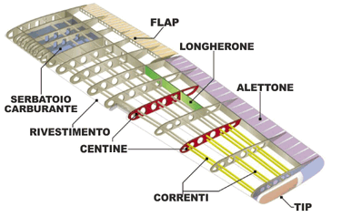
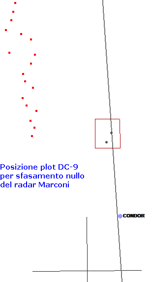

Secondo il collegio Bazzocchi, quindi, non esiste alcuna possibilità che l'aereo abbia effettuato una qualsivoglia planata, tanto da essere esclusa nel documento "
Capitolo LXXI - Consulenza tecnica Bazzocchi - 31.12.94.", nel quale, a partire da fine pag. 2, si legge che il relitto principale del DC-9 e i motori hanno, secondo Bazzocchi, iniziato la caduta con un angolo a picchiare di ben 55°.
Tuttavia, nonostante l'esperienza pluridecennale dell'ing. Bazzocchi come progettista aeronautico, il documento "
Capitolo LXIX - Consulenza tecnica Bazzocchi ed altri - 15.12.94." bolla i suoi scritti, in sostanza, come inattendibili per le troppe semplificazioni (v. soprattutto l'ultima pagina).
Tuttavia il distacco dei motori in quota è il problema che accomuna queste due perizie.
Infatti, il dettaglio dei motori distaccatisi quando il DC-9 era in quota si rivela estremamente utile per verificare (con ragionevole facilità) l'attendibilità della sequenza degli eventi e, quindi, delle perizie. Infatti, tenendo per buone le coordinate della zona di ritrovamento dei motori con la relativa incertezza, si può agevolmente verificare se i motori che si staccano in quota possano andare a finire proprio in quella zona.

L'immagine mostra gli elementi strutturali che compongono l'ala ed è tratta dalla pagina "
STA - dispense - Strutture aeronautiche", alla quale si rimanda per la spiegazione della funzionalità dei vari elementi strutturali.
La struttura alare di un aereo di linea è molto diversa da quella mostrata dall'immagine, il cui unico scopo è quello di far vedere la forma e l'ubicazione degli elementi strutturali nominati in questa pagina.
Passando alle conclusioni esposte a pag. 14, si può leggere:
| Pag. | Perizia | Commenti |
| 2 |
il perito ha ritenuto di grande importanza nei casi di emotimpano e di lesione della membrana timpanica il barotrauma, rappresentato inizialmente dalla brusca depressurizzazione in quota della cabina dell’aereo, seguìto da un rapido aumento della pressione aerea nel tempo in cui il velivolo ha perduto quota, e da un altro aumento dovuto all’immersione in mare. |
Non servono particolari competenze per capire che uno squarcio nella fusoliera ha causato una decompressione rapida (probabilmente esplosiva), dopo della quale l'aereo ha perso quota molto velocemente. |
| 4 |
i cadaveri recuperati dal mare presentavano, per la massima parte, lesioni gravissime, incompatibili con la sopravvivenza, dovute all’impatto dell’aereo con la superficie del mare; |
Ciò rafforza quanto già detto, cioè l'aereo ha perso velocemente quota, il che implica una velocità verticale molto elevata; velocità con la quale l'aereo ha impattato il mare; niente planate né ammaraggi, quindi. |
| 5 |
la frammentazione delle singole ossa avvalora la tesi di lesioni traumatiche gravissime riportate al momento dell’impatto dell’aereo sulla superficie del mare; [...] l’assenza delle diatomee nei tessuti ossei e nei preparati istologici (cuore e polmone) unitamente all’assenza del fungo schiumoso [...] determinano l’esclusione della diagnosi di morte per annegamento. |
Idem come sopra. |
| 7 |
Sulle salme recuperate, [...], non furono mai riscontrate ustioni, anzi furono esplicitamente escluse; non fu mai riscontrata la presenza di fuliggine nelle vie aeree; [...] In base a questi dati escludeva [il perito, ndr] che un incendio, da qualunque causa provato, quindi anche da una esplosione, potesse aver interessato alcuno dei cadaveri esaminati. |
- |
| 8 |
Tutti i dati e le considerazioni effettuate portano alla conclusione che non vi sia stata alcuna esplosione a bordo. |
- |
| 8 |
qualora non si rilevassero tracce di esplosione o di incendio, si dovrebbe concludere che tale falla è stata causata da un agente esterno (missile o collisione con altro aereo o parte di esso). |
Il perito ha esplicitamente escluso tracce di esplosione o incendio. Pertanto, le cause dell'abbattimento del DC-9 andrebbero ricercate all'esterno, non all'interno dell'aereo. |

Questa
immagine errata, invece, mostra la posizione dei plot del DC-9 ottenuta senza applicare la
necessaria correzione all'azimut dei plot.
Per la scala della cartina, si può fare riferimento alla croce a sud del punto Condor ampia 10 x 10 nm, centrata nel punto 39,5° N, 13° E.
I teorici della strage di Ustica che sostengono il perfetto allineamento del radar Marconi con il nord geografico posizionano l'ultimo plot del DC-9 circa 12 km a ovest della zona di ritrovamento dei motori (rappresentata dal puntino più a sud situato all'interno del piccolo rettangolo). Quindi, a loro dire, l'aereo semi-distrutto avrebbe immediatamente assunto una rotta verso est (per motivi del tutto oscuri), tentando un ammaraggio con una decina di nodi di vento in coda (!).
Sfortunatamente per questi teorici, la storiella del perfetto allineamento è del tutto impossibile da dimostrare. È, invece, perfettamente possibile dimostrare che lo sfasamento del radar Marconi è ben superiore a 2° in senso antiorario, come ampiamente spiegato nella pagina "
Allineamento radar Marconi e Selenia".
Le svariate cartine presenti nel sito mostrano il corretto posizionamento dei plot relativi all'IH870, aggiungendo, quando necessario, anche l'incertezza. Da tali cartine si nota molto chiaramente che la rotta del DC-9 durante gli ultimi minuti è quasi esattamente allineata con la zona di ritrovamento dei motori, situata a circa 4 km dall'ultimo plot.
L'unica ragionevole deduzione che da tale fatto si dovrebbe trarre, è che l'aereo, dopo l'abbattimento ha proseguito senza deviare in modo significativo dalla rotta che aveva, andando a finire, privo di controllo, in prossimità della zona di ritrovamento dei motori.
Per ciò che riguarda il moto verticale, non si hanno elementi certi per poter dire cosa sia realmente successo, ma è chiaro che in quei 4 km l'aereo ha perso oltre 25000 ft. Questo fatto è utile per paragonare la "planata" del DC-9 con una normale planata. Infatti, tenendo presente che un aereo durante la normale discesa attraversa le quote intorno ai 20000/25000 ft con un gradiente verticale (v. "
Unità di misura") di circa 350 ft/nm e che il DC-9 ha tenuto un gradiente di circa 12000 ft/nm (!), stiamo parlando di una "planata" oltre 30 volte più ripida di una planata senza virgolette.
Tornando alla tabella, la seconda riga, infine, rende evidente che la violenza dell'impatto con il mare è stata tale da dover essere stata causata da una velocità terminale dell'aereo avente una componente verticale molto elevata che, evidentemente, è incompatibile con qualunque modalità di discesa che possa essere definita "planata", per quanto ripida avesse potuto essere quell'immaginaria planata.